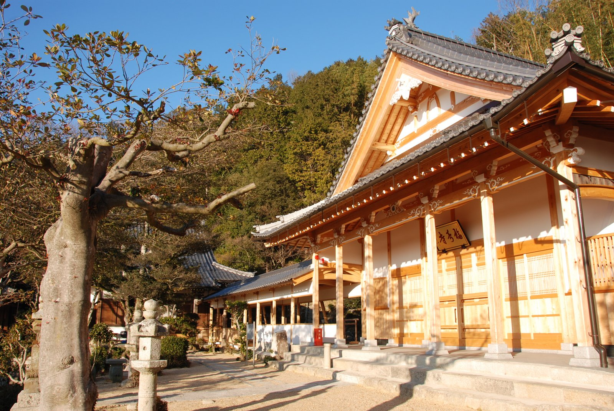
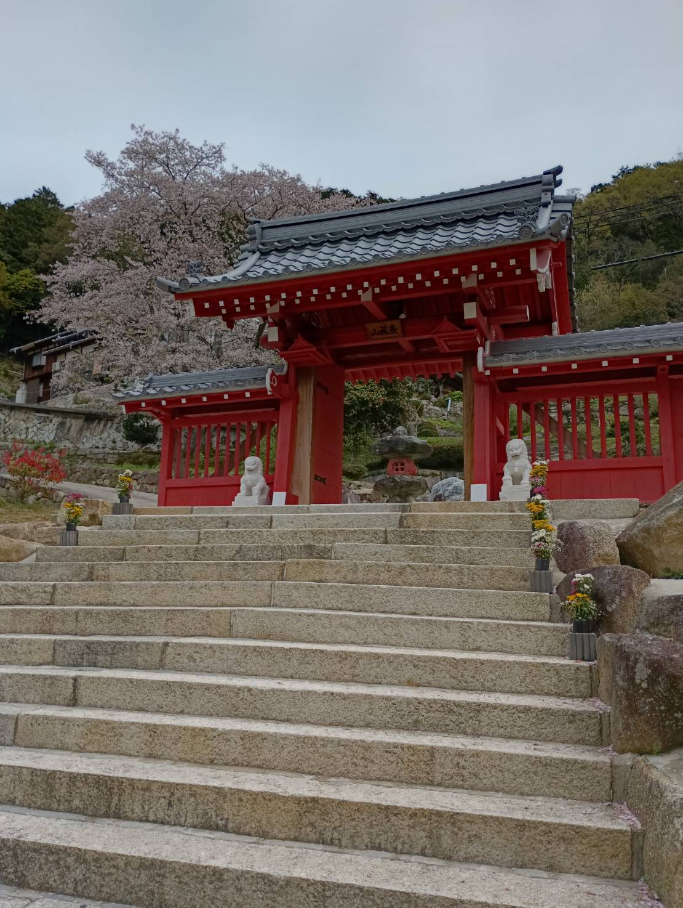
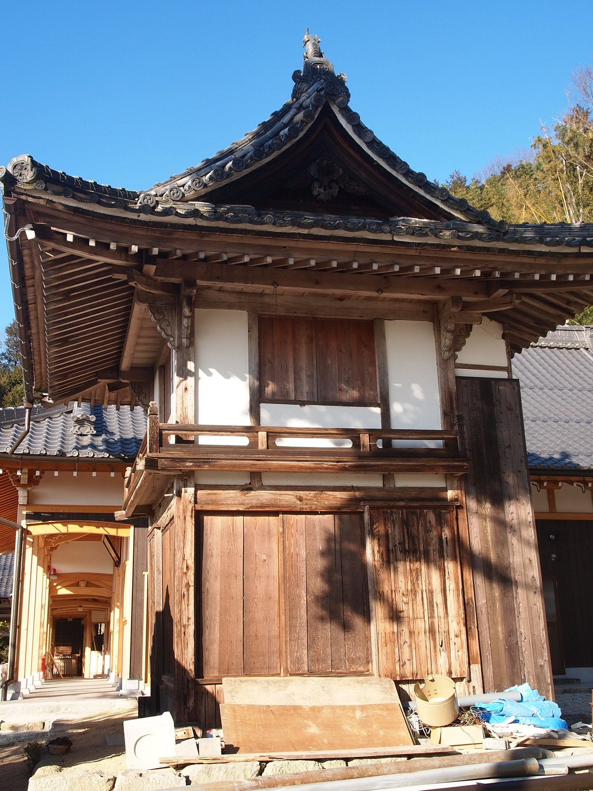
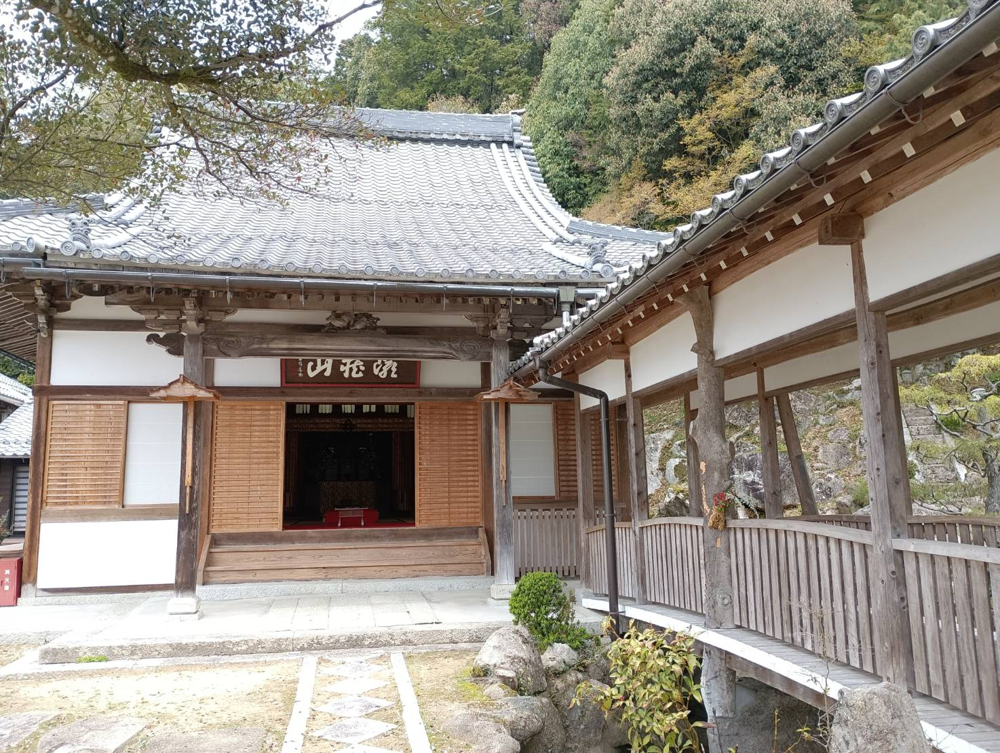
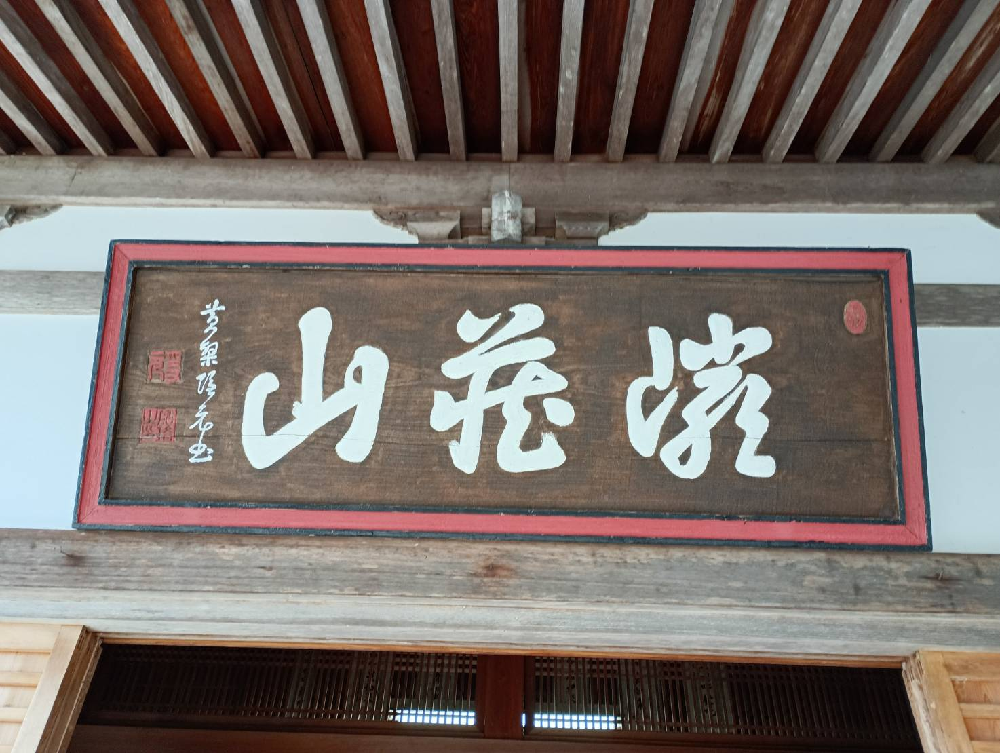

縁起・歴史

巌蔵山 福寿寺は、天長六年（八二九年）に第五十三代 淳和天皇の勅願により開創された 千二百年の歴史をもつ近江の古刹です。
天長6年（829）── 開創
淳和天皇の勅願により開創。山腹に七堂伽藍を建立し、宝祚万歳の祈願所として五百町歩の寺領を賜る。
七十有余の僧坊が山麓まで連なる壮大な規模であった。
伝教大師最澄が自ら刻んだ観音像を安置し、当初は天台宗に属した。
本堂前門は比叡山頂を正しく指向している。
嘉応2年（1170）── 本尊造立
後白河法皇の御代。この地の豪族 中原朝臣の一族数十人が名を連ねて
千手十一面観音像を刻成し山上の福寿寺に納めた（仏師・僧 長順の作）。
「いわくら観音」として広く信仰を集める。
元亀元年（1570）── 焼失
織田信長の近江侵攻に伴う兵火により堂宇悉く焼失。
寺産は没収され、礎石と名前のみが残った。
しかし里人が山上に草堂を設け、命がけで本尊を守護し続けた。
以後百数十年間、密かに観音像を守り継いだ。
延宝8年（1680）── 黄檗宗での復興
伴氏をはじめとする当時の諸檀信が
黄檗宗の梅嶺道雪禅師を迎えて中興。
領主坂井氏父子もその興造を助けた。庭園もこの時期に形を整えた。
貞享3年（1686）── 本堂建立
本堂兼禅堂が建立される。
大正時代 ── 胎内納入物の発見
本尊修理の際、胎内から松枝双鳥鏡・千体仏の版画・銘文が発見される。
嘉応二年の造立を確認する貴重な資料となった。
歴代住持
開山 大眉性善禅師
隠元禅師の唐土以来の愛弟子。黄檗山東林院に住した。 梅嶺禅師の嗣法の師にあたる。
中興開山 梅嶺道雪禅師
当山の事実上の開山。初め九州小倉の広壽山で即非禅師の下で多年修行した後、
黄檗山に上り隠元禅師の侍者として数年を経る。
八幡を中心として道風徳望が内外に聞こえ、「住巖蔵山福寿禅寺語録」を残す。
境内施設

山門
2023年に新築された朱塗りの山門

鐘楼
延宝の復興期より境内に佇む歴史ある鐘楼

開山堂・通幽橋
大眉禅師・梅嶺道雪禅師を祀る堂と、本堂を結ぶ渡り廊下

山号額「巌蔵山」
当山の山号「巌蔵山（がんぞうざん）」を掲げた扁額